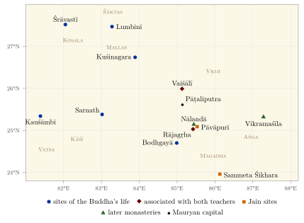
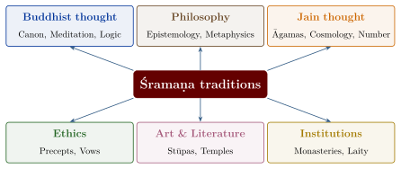

Chapter 1: Introduction: Two Śramaṇa Traditions¶
Buddhaṃ saraṇaṃ gacchāmi,
Dhammaṃ saraṇaṃ gacchāmi,
Saṅghaṃ saraṇaṃ gacchāmi.
I go to the Buddha for refuge, I go to the Dhamma for refuge, I go to the Saṅgha for refuge.
— The Three Refuges (Tisaraṇa), Khuddakapāṭha 1
Namo arihantāṇaṃ,
namo siddhāṇaṃ,
namo āyariyāṇaṃ,
namo uvajjhāyāṇaṃ,
namo loe savva-sāhūṇaṃ.
Homage to the Arhats, homage to the Siddhas, homage to the teachers (ācārya), homage to the preceptors (upādhyāya), homage to all mendicants in the world.
— The Namokāra (Navakāra) Mantra, the principal Jain prayer
1.1 The Indian Intellectual Landscape¶
The Indian subcontinent has long been a fertile ground for philosophical thought, spiritual inquiry and systematic knowledge. The phrase jñāna paramparā — “tradition of knowledge” or “lineage of learning” — captures the idea that knowledge is handed down, tested and renewed from teacher to student. In most Indian traditions knowledge is not only an accumulation of facts or theories; it is also a disciplined practice (sādhanā) whose highest goal is liberation, variously called mokṣa, nirvāṇa or kaivalya.
Within this landscape two traditions stand out for the depth of their philosophical analysis, the rigour of their ethics and the breadth of their influence: the Buddhist tradition (Bauddha) and the Jain tradition (Jaina). Both took their historical form in the middle Ganges valley in the fifth century BCE, within the broad movement of wandering renunciants known as śramaṇas, and both have continued to develop for some two and a half millennia (Gethin 1998; Dundas 2002). Each also understands itself in its own terms: Buddhists see the Buddha as rediscovering a path taught by Buddhas of earlier ages, and Jains regard their teaching as eternal, proclaimed anew in each age by a Tīrthaṅkara, with Mahāvīra as the last of twenty-four and Pārśva as his historical predecessor.
This volume of the series Bhāratīya Jñāna Paramparā is devoted to the knowledge systems of these two traditions. Its title, Buddha–Jina Prabhā — “the radiance of the Buddha and the Jina” — honours the two teachers around whom the traditions crystallised: Siddhārtha Gautama, who became the Buddha (the “Awakened One”), and Vardhamāna, who became Mahāvīra (the “Great Hero”), the last of the twenty-four Jinas (“Victors”) or Tīrthaṅkaras (“Ford-Makers”) of Jain tradition.
1.2 The Śramaṇa Heritage¶
The term śramaṇa (Pāli samaṇa, Prakrit samaṇa) derives from the root śram, “to exert oneself, to strive”. Śramaṇas were wandering ascetics who sought liberation through personal effort, renunciation and contemplative discipline, usually outside — and often in criticism of — the Brahmanical emphasis on Vedic sacrifice (yajña) and hereditary priesthood. Early Indian texts frequently pair “śramaṇas and brāhmaṇas” as the two kinds of religious specialist, and the edicts of Aśoka (3rd century BCE) use the same pairing (Bronkhorst 2007; Thapar 1961).
The Śramaṇa groups differed widely, but they shared a recognisable ideal. The aspirant renounced household life and its pleasures (tyāga), which were seen as sources of bondage, and sought liberation by his or her own discipline rather than by ritual performed by others. Restraint from harming living beings (ahiṃsā) was central, though its scope varied greatly from group to group. Action was held to have consequences extending across lifetimes, and in time communities of monks and nuns provided the institutional frame for the religious life.
Buddhism and Jainism are the two most enduring expressions of this heritage, but they were not the only ones. The early Buddhist and Jain texts mention many other teachers and groups, including the determinist Ājīvikas, the materialists (later called Lokāyata or Cārvāka), and sceptics.
1.2.1 Historical Context¶
The fifth century BCE in the Ganges valley saw the growth of territorial states (the mahājanapadas), the rise of towns such as Rājagṛha, Vaiśālī, Śrāvastī and Vārāṇasī (Kāśī), the spread of coinage and long-distance trade, and the emergence of new social groups. Many historians link the appeal of the Śramaṇa movements to these changes, which created audiences — merchants, town-dwellers, members of the ruling clans — receptive to paths of individual moral effort (Gombrich 2006; Chakravarti 1987).
The early Buddhist lists (for example Aṅguttara Nikāya 3.70) name sixteen “great realms” (mahājanapada): Aṅga, Magadha, Kāśī, Kosala, Vṛjji, Malla, Cedi, Vatsa, Kuru, Pañcāla, Matsya, Śūrasena, Aśmaka, Avanti, Gandhāra and Kamboja. The list is schematic rather than a map of a single moment, and by the Buddha’s lifetime Magadha and Kosala were absorbing their neighbours. Both the Buddha and Mahāvīra taught chiefly in Magadha, Kosala and the Vṛjji confederacy, the region shown in Figure 1.1, with Rājagṛha (modern Rajgir), Vaiśālī and Śrāvastī among their favourite centres. Both drew followers from several social strata — rulers and merchants, brāhmaṇas and people of low status, men and women — although the surviving texts suggest that the urban elite and the ruling clans were especially prominent among their patrons (Chakravarti 1987).

1.2.2 The Six Teachers¶
The Pāli Sāmaññaphala Sutta (Dīgha Nikāya 2) describes six well-known teachers contemporary with the Buddha, each with a following, a reputation and a distinctive view (Table 1.1). Its accounts are polemical and compressed, but they illustrate the variety of the Śramaṇa milieu (Walshe 1995; Basham 1951).
| Teacher | Characteristic view | Position as reported in DN 2 |
|---|---|---|
| Pūraṇa Kassapa | Non-action (akiriya) | Actions bring neither merit nor demerit |
| Makkhali Gosāla | Fate (niyati); Ājīvika | All beings are purified by passing through a fixed round of births; effort is ineffective |
| Ajita Kesakambalī | Annihilationism | The person is made of four elements and is destroyed at death; no fruit of good or bad actions |
| Pakudha Kaccāyana | Seven unchanging bodies | Earth, water, fire, air, pleasure, pain and the soul are eternal; no one truly kills |
| Sañjaya Belaṭṭhaputta | Evasion (“eel-wriggling”) | Refuses to affirm or deny any proposition about the afterlife |
| Nigaṇṭha Nātaputta | Fourfold restraint | Mahāvīra, presented as teaching restraint of the self in four ways |
The inclusion of Mahāvīra — here called Nigaṇṭha (“free of bonds”) Nātaputta (“son of the Nāta/Jñātṛ clan”) — among these teachers is significant. It confirms that he and the Buddha were contemporaries and that each tradition was aware of the other from an early date. The Buddhist summary of his teaching is not accurate by later Jain standards (the “fourfold restraint” is associated in Jain sources with Mahāvīra’s predecessor Pārśva), a reminder that such reports must be read critically (Dundas 2002).
1.2.3 The Ājīvikas¶
The Ājīvikas, whose best-known leader was Makkhali Gosāla, were for several centuries a major rival of both Buddhism and Jainism. They held a doctrine of strict determinism (niyativāda): all beings pass through a fixed, immensely long but finite cycle of rebirths, after which liberation comes of itself. Buddhist texts treat this as the most pernicious of wrong views because it denies the value of moral effort. Jain texts describe Gosāla as a former companion of Mahāvīra who later broke with him (Basham 1951).
The Ājīvikas received royal patronage: Aśoka and his grandson Daśaratha dedicated rock-cut caves in the Barabar and Nagarjuni hills in Bihar — among the earliest rock-cut monuments in India — to Ājīvika ascetics. No Ājīvika scripture survives, and the tradition is known only through the writings of its opponents and through inscriptions. Tamil inscriptions mention a tax on Ājīvikas as late as the thirteenth or fourteenth century, after which they disappear from the record (Basham 1951).
1.3 Buddhism and Jainism: Parallels and Distinctions¶
Buddhism and Jainism agree on more than either agrees with the Brahmanical orthodoxy of their time. Neither accepts the Veda as revealed or the Vedic sacrifice as a path to liberation; both hold that liberation is reached by one’s own discipline rather than by ritual or divine grace; both treat karma as a law of consequence that operates without a divine judge; and both organised orders of monks and nuns supported by lay followers, admitting, in principle, people of any class (a principle that practice did not always match, as Chapter 14 shows).
Their deepest disagreement concerns the self. For the Buddha there is no permanent self (anātman) to be found in any of the constituents of a person; for Mahāvīra every living being is an eternal, individual soul (jīva). The difference shapes the rest of each system. Because Jainism understands karma as a fine matter that adheres to the soul, the removal of karma is in part a physical process, and austerity (tapas) is one of its principal means; non-harming must extend to the smallest beings, including those embodied in earth, water, fire and air, because any careless action draws in more karmic matter. Because Buddhism understands karma as intention (cetanā), its discipline is above all a discipline of the mind, and the Middle Way rejects the extreme austerities that the Jains made central. Table 1.2 sets out these and other points of comparison.
| Aspect | Buddhism | Jainism |
|---|---|---|
| Teacher | Siddhārtha Gautama, the Buddha | Vardhamāna Mahāvīra, 24th Tīrthaṅkara |
| Self | No permanent self (anātman); a person is a stream of processes | Eternal, individual souls (jīva), infinite in number |
| Universe | Many world-systems, arising and dissolving in cycles; in Madhyamaka, all things empty of intrinsic nature | A single, eternal, uncreated universe (loka) of six substances |
| Karma | Intentional action (cetanā) | A subtle matter drawn in by activity and bound to the soul by the passions |
| Liberation | Nirvāṇa: the ending of craving, suffering and rebirth | Mokṣa: the soul freed of karmic matter, with infinite knowledge, perception, bliss and energy |
| Non-harming | Central; intention weighs heavily | Rigorous; extends to the smallest beings and to elemental life |
| Asceticism | The Middle Way rejects extreme austerity | Austerity (tapas) a principal means of shedding karma |
| God | No creator; gods exist but are within saṃsāra | No creator; Tīrthaṅkaras are worshipped as exemplars, not as dispensers of grace |
| Key method | Dependent origination (pratītyasamutpāda) | Many-sidedness (anekāntavāda); conditional predication (syādvāda) |
| Canonical languages | Pāli (Theravāda); Sanskrit and Buddhist Hybrid Sanskrit (other schools) | Ardhamāgadhī (Śvetāmbara canon); Jaina Śaurasenī (Digambara scriptures) |
| Canon | Tipiṭaka/Tripiṭaka; Chinese and Tibetan canons | Śvetāmbara Āgamas (Chapter 8); Digambaras hold the ancient canon lost |
| Orders and divisions | Bhikkhu and bhikkhunī saṅghas; Theravāda, Mahāyāna, Vajrayāna | Monks and nuns (Digambara nuns are āryikās); Digambara and Śvetāmbara, each with sub-traditions |
| Geographical spread | Pan-Asian, now global | Mainly India, with a modern diaspora |
1.4 The Knowledge Systems Approach¶
This volume follows the approach of the series as a whole. Rather than treating Buddhism and Jainism only as “religions”, it asks what each tradition claimed to know and how it organised that knowledge (Figure 1.2). Each had a theory of the valid means of knowledge (pramāṇa) and an account of what there is — the dharmas of the Buddhist analysts, the six substances (dravya) of the Jains. Each joined these to an ethics of precepts and vows and to a discipline of meditation, and each placed human life within a cosmology of world-ages and realms of rebirth. The Jains added a sustained interest in number and measure, and both traditions built monastic institutions that organised learning and attracted royal and mercantile patronage.

The results under these heads were uneven, and this book does not pretend otherwise. The Buddhist logicians Dignāga and Dharmakīrti built a system of epistemology with which every later Indian school had to engage (Chapter 5); Jain authors developed a philosophy of many-sidedness, an elaborate cosmology and a tradition of mathematical classification that distinguished the numerable, the innumerable and the infinite (Chapters 9 and 10). Other claims made for the two traditions in popular writing — that they anticipated modern physics or set theory, or that their monasteries were universities in the modern sense — do not survive a reading of the sources, and the chapters that follow say so where the question arises.
1.5 Scope and Structure of This Volume¶
The volume is organised into fourteen chapters in three parts.
- Part I: Buddhist Knowledge (Chapters 2–7)
- The life and teachings of the Buddha (Chapter 2); the canonical literature of the Tipiṭaka (Chapter 3); the three major streams of Buddhist thought — Theravāda (Chapter 4), Mahāyāna, with Buddhist logic and epistemology (Chapter 5), and Vajrayāna (Chapter 6); and Buddhist institutions of learning, including the monasteries of Nālandā and Vikramaśīla and the decline of Buddhism in India (Chapter 7).
- Part II: Jain Knowledge (Chapters 8–12)
- Mahāvīra and the Tīrthaṅkara tradition (Chapter 8); Jain philosophy (Chapter 9); mathematics in the Jain tradition (Chapter 10); Jain cosmology and ethics (Chapter 11); and Jain grammar, lexicography, astronomy, historical writing and literature (Chapter 12).
- Part III: Practice and Shared Heritage (Chapters 13–14)
- Religious life in practice: the discipline of monks and nuns, the history of the Buddhist order of nuns, and the gifts, rites, worship and pilgrimage of lay Buddhists and Jains (Chapter 13); and the interactions between Buddhist, Jain and Brahmanical traditions, their art and literature, questions of caste and gender, and their modern history (Chapter 14).
Several topics touched on here are treated more fully elsewhere in the series: the Buddhist and Jain schools among the Indian philosophical systems in Volume 3 (Darśana Darpaṇa), Buddhist tantra and its Tibetan schools in Volume 6 (Tantra–Āgama), Jain mathematics in Volume 11 (Gaṇita), and Buddhist psychology and the monastic centres of learning in Volume 22 (Manas and Śikṣā).
1.6 A Note on Sources and Terminology¶
The primary texts of these traditions are in Pāli, Sanskrit and several Prakrits, with vast later literatures in Chinese, Tibetan and the regional languages of India and Asia. Translations of Pāli texts quoted here follow, or are adapted from, the standard modern translations (Walshe 1995; Ñāṇamoli and Bodhi 1995; Bodhi 2000, 2012), with K. R. Norman’s versions of the Dhammapada and Sutta Nipāta (Norman 1997, 1992); Pāli glosses follow the Pali Text Society’s dictionary (Rhys Davids and Stede 1921). Jain canonical passages are cited from Jacobi’s classic translations and later scholarship (Jacobi 1884, 1895). References to Pāli suttas use the conventional abbreviations DN (Dīgha Nikāya), MN (Majjhima Nikāya), SN (Saṃyutta Nikāya), AN (Aṅguttara Nikāya), Sn (Sutta Nipāta), Dhp (Dhammapada), Khp (Khuddakapāṭha) and Thig (Therīgāthā). For names, texts and terms not explained here, readers may consult the standard reference works (Buswell and Lopez 2014; Silk 2015; Jacobsen et al. 2020).
Transliteration follows the International Alphabet of Sanskrit Transliteration (IAST). Technical terms are given in the original language at first occurrence with an English rendering. Where a Pāli and a Sanskrit form both exist (nibbāna/nirvāṇa, dhamma/dharma), the Pāli form is generally used for Theravāda contexts and the Sanskrit form elsewhere. Tibetan names and terms, which are few, are given in a simplified phonetic form with the Wylie transliteration in parentheses at first occurrence, for example Kagyu (bka’ brgyud). A glossary is provided at the end of the volume.
1.6.1 Respectful Engagement¶
For millions of people these traditions are not merely objects of study but living paths of practice. The historical and philosophical analysis offered here is intended to complement, not to replace, the devotional and experiential dimensions of these traditions. Where the traditions’ own accounts differ from the conclusions of historical scholarship — on dates, authorship or the origin of texts — both are reported, and the difference is made explicit.
Ye dhammā hetuppabhavā
tesaṃ hetuṃ tathāgato āha,
tesañ ca yo nirodho
evaṃvādī mahāsamaṇo.
Of those things that arise from a cause, the Tathāgata has told the cause, and also what their cessation is: such is the teaching of the Great Ascetic.
— Vinaya, Mahāvagga I.23.5
According to the Vinaya, these words were spoken by Assaji, one of the Buddha’s first five disciples, to the wandering ascetic Sāriputta, who on hearing them grasped the teaching and later became one of the Buddha’s chief disciples. The verse became one of the most widely inscribed formulas in the Buddhist world. It summarises the analytical core of the teaching: things arise from causes, and when the causes cease, the things cease. This is the principle of dependent origination (pratītyasamutpāda), discussed in Chapter 2.
1.7 The Chronological Framework¶
Absolute dates for early Indian history are uncertain, and the dates of the Buddha and Mahāvīra in particular have been debated for more than a century. The traditional Theravāda reckoning places the Buddha’s death in 544/543 BCE; the “corrected long chronology” long used in Western scholarship places his life at c. 563–483 BCE; most specialists now favour a “short chronology” that places his death around 400 BCE, give or take a few decades (Bechert 1991; Cousins 1996). This volume uses c. 480–400 BCE for the Buddha’s life (see the chronology in Table 1.3). Mahāvīra is traditionally dated 599–527 BCE (Śvetāmbara reckoning); since the early texts make him an older contemporary of the Buddha, most historians place him in the fifth century BCE as well (Dundas 2002).
| Period | Buddhist tradition | Jain tradition |
|---|---|---|
| before 5th c. BCE | Pārśva, 23rd Tīrthaṅkara, probably a historical teacher (traditional dates 877–777 BCE) | |
| 5th c. BCE | The Buddha, c. 480–400 BCE (Theravāda traditional dates 624–544 BCE; older scholarly “corrected long chronology” c. 563–483 BCE); First Council at Rājagṛha after his death (tradition) | Mahāvīra (traditional dates 599–527 BCE) |
| c. 4th c. BCE | Second Council at Vaiśālī, about a century after the Buddha’s death; later split between Sthaviras and Mahāsāṅghikas | Tradition places a council at Pāṭaliputra and a migration south under Bhadrabāhu during a famine |
| c. 268–232 BCE | Aśoka’s reign and edicts; Third Council at Pāṭaliputra (Theravāda tradition); mission to Sri Lanka | Ājīvikas and Nigaṇṭhas (Jains) named in Aśoka’s Pillar Edict VII |
| 1st c. BCE | Pāli canon written down in Sri Lanka (c. 29 BCE, tradition) | Khāravela of Kaliṅga, a Jain king (Hāthīgumphā inscription) |
| 1st c. BCE– 2nd c. CE |
Early Mahāyāna sūtras; Kuṣāṇa patronage; Gandhāra and Mathurā art | Jain community at Mathurā (inscriptions); gradual Digambara–Śvetāmbara division |
| c. 2nd–3rd c. CE | Nāgārjuna | Umāsvāti, Tattvārthasūtra (date disputed, between 2nd and 5th c.) |
| 4th–5th c. CE | Asaṅga, Vasubandhu; Buddhaghosa in Sri Lanka; Nālandā founded under the Guptas; Vinayas translated into Chinese; Sri Lankan nuns give ordination to Chinese women at Nanjing (433 or 434) | Śvetāmbara canon redacted at Valabhī (c. 453 or 466 CE); Lokavibhāga (458 CE) |
| 6th–7th c. CE | Dignāga (c. 480–540), Dharmakīrti (6th–7th c.); Xuanzang in India (c. 630–643) | Siddhasena Divākara, Samantabhadra (dates disputed) |
| 8th–12th c. CE | Vajrayāna; Pāla patronage; Vikramaśīla; transmission to Tibet; the Sri Lankan order of nuns lapses (11th c.) | Akalaṅka, Haribhadra (8th c.); Jinasena (9th c.); Kharatara Gaccha’s founding debate (1024, tradition); Hemacandra (1088/89–1172); Vimala Vasahī at Mount Abu (1031) |
| c. 1200 CE | Sack of Odantapurī, Vikramaśīla and Nālandā during Turkish campaigns in Bihar and Bengal; Śākyaśrībhadra of Kashmir in Tibet (from 1204) | Jain communities continue under new regimes in western India; Tapā Gaccha (1228, tradition); Lūṇa Vasahī at Mount Abu (1230) |
| 13th–14th c. CE | Buddhism fades in Kashmir; survives in Odisha, on the Tamil coast and in the Himalayan regions | Prabhāvakacarita (1277/78) and Merutuṅga’s Prabandhacintāmaṇi (1305); Jinaprabha Sūri at the court of Muḥammad bin Tughluq; Mahendra Sūri’s Yantrarāja (1370) |
| 15th c. CE | Buddhism survives in Himalayan regions and pockets elsewhere | Raṇakpur temple (15th c.); Loṅkā Śāh’s reform (origin of later non-image-worshipping orders) |
| 19th–20th c. | Mahābodhi Society (1891); Ambedkar’s conversion (1956); Tibetan exile in India (1959); ordination of Sri Lankan nuns at Sarnath (1996) | Saṃvegī revival of wandering Śvetāmbara mendicants; Śrīmad Rājacandra and Gandhi; Kānjī Svāmī’s movement (from the 1930s); Aṇuvrat (1949) |
1.8 Śramaṇa and Brāhmaṇa¶
The relationship between the Śramaṇa traditions and the Brahmanical or Vedic tradition was a long exchange of critique, borrowing and reinterpretation that lasted for many centuries.
A Continuum, Not Two Camps
Modern scholarship increasingly treats Śramaṇa and Brāhmaṇa as overlapping rather than sharply opposed milieus. Ideas of karma, rebirth and liberation appear in the early Upaniṣads as well as in the Buddhist and Jain canons, and scholars still debate which way the influences ran. Johannes Bronkhorst has argued that the region of “Greater Magadha” where both teachers lived was not yet Brahmanised in their time, and that Buddhism had later to adapt to a Brahmanism that became dominant only under and after the Mauryas (Bronkhorst 2007, 2011). Buddhist and Jain texts use Brahmanical vocabulary (often redefining it), and later Brahmanical thought absorbed Śramaṇa ideas of renunciation and non-violence. Jain authors such as Haribhadra (8th century) wrote surveys of the major philosophical systems, Buddhist and Brahmanical alike.
Brahmanical religion emphasised sacrifice (yajña), the authority of the Veda (śruti) and the order of social classes and life-stages (varṇāśrama). The Śramaṇa traditions challenged each of these: they criticised animal sacrifice in the name of non-harming, they grounded religious authority in the insight of their teachers rather than in the Veda, and in principle they opened the path to liberation to people of every class.
Na jaccā vasalo hoti,
na jaccā hoti brāhmaṇo;
kammanā vasalo hoti,
kammanā hoti brāhmaṇo.
Not by birth is one an outcaste, not by birth is one a brāhmaṇa; by action one is an outcaste, by action one is a brāhmaṇa.
— Sutta Nipāta 136, Vasala Sutta
Such verses redefine the word “brāhmaṇa” in ethical terms; they did not abolish social hierarchy in Buddhist societies, a point discussed in Chapter 14. Influence also ran in the other direction and across many centuries, from the Nyāya replies to the Buddhist logicians to the debated Buddhist element in Advaita Vedānta; these exchanges are traced in Chapter 14 (Section 14.4).
1.9 Epistemological Foundations¶
Both traditions developed theories of knowledge (pramāṇa-śāstra) that shaped Indian philosophy as a whole (Table 1.4).
| Feature | Buddhist (Dignāga, Dharmakīrti) | Jain (Umāsvāti, Akalaṅka) | Nyāya |
|---|---|---|---|
| Number of pramāṇas | Two: perception and inference | Two: direct (pratyakṣa) and indirect (parokṣa), covering five kinds of knowledge (mati, śruta, avadhi, manaḥparyaya, kevala) | Four: perception, inference, comparison, testimony |
| Perception | Free of conceptual construction; grasps the momentary particular | For Umāsvāti only supersensory cognition is direct; Akalaṅka adds sense-perception as “empirically direct” | Arises from contact of sense and object; may be conceptual |
| Testimony | Treated as a form of inference | A source of knowledge (śruta) | An independent pramāṇa (śabda) |
| Highest knowledge | Insight that ends ignorance; the Buddha’s authority | Omniscience (kevala-jñāna) | Knowledge of the categories leading to liberation |
| Self-awareness | Cognition is self-aware (svasaṃvedana) for Dignāga; rejected by Candrakīrti | Knowledge illuminates both itself and its object | Not self-aware; a cognition is known by a further, introspective cognition (anuvyavasāya) |
The table simplifies positions that each school argued over for centuries. The Buddhist column follows Dignāga (c. 480–540) and Dharmakīrti (6th–7th century), whose system, and the long line of later Buddhist epistemologists who answered its critics, is described in Chapter 5 (Section 5.8); the Jain column is explained in Chapter 9 (Section 9.6).
1.10 The Role of Language and Translation¶
The choice of language for sacred texts was itself significant. The Theravāda canon is preserved in Pāli, a Middle Indo-Aryan language, which the Pali Text Society (founded 1881) has published in roman script. Most Mahāyāna and Vajrayāna literature, and the works of the Buddhist logicians, are in Sanskrit or in the Buddhist Hybrid Sanskrit of the sūtras. The Śvetāmbara Jain canon is in Ardhamāgadhī Prakrit and the early Digambara scriptures in Jaina Śaurasenī; Jain authors from Umāsvāti onwards also wrote in Sanskrit, and Jain poets made Apabhraṃśa, the literary form of the late Middle Indo-Aryan vernaculars, one of their main languages (Chapter 12). Outside India the Buddhist canon was translated into classical Chinese by generations of translators and into classical Tibetan, whose canon, the Kangyur (bka’ ’gyur) and Tengyur (bstan ’gyur), preserves many works whose Sanskrit originals are lost.
The Vinaya (Cullavagga V.33) records that the Buddha refused a proposal to put his teaching into Vedic metre and allowed monks to learn it “in their own dialect” (sakāya niruttiyā). The phrase is ambiguous — it may mean the monks’ own languages or the Buddha’s own idiom — but the tradition generally took it as permitting translation, which greatly helped Buddhism to spread across language boundaries (Norman 1983). The Jains likewise used Prakrit for their canon, though Jain scholars later became masters of Sanskrit grammar: Hemacandra’s Siddhahemaśabdānuśāsana covers both Sanskrit and the Prakrits (Chapter 12, Section 12.2).
1.11 The Śramaṇa Legacy in Indian Civilisation¶
The contributions of the two traditions to Indian civilisation reach beyond religion, and they differ in kind (Table 1.5). Buddhism left its largest mark through institutions: the great monasteries, which trained scholars from across Asia, and the transmission of Indian learning to Tibet, China and Southeast Asia. Jainism, which never spread far beyond India, left its mark through a continuous community: manuscript libraries, merchant patronage of temples and literature, and a share in the early literatures of Kannada, Tamil and Gujarati. Both contributed to logic and to the ethics of non-harming. The table is a guide to later chapters rather than a balance sheet; several of its entries are discussed critically where they arise.
| Domain | Buddhist | Jain |
|---|---|---|
| Learning | Great monasteries such as Nālandā, Valabhī and Vikramaśīla | Manuscript libraries (bhaṇḍāras) and monastic scholarship |
| Literature, grammar | Pāli canon; Jātaka tales; Sanskrit poetry and drama (Aśvaghoṣa); Candragomin’s grammar | Prakrit and Apabhraṃśa narrative; Kannada and Tamil classics; Hemacandra’s grammars and lexicons |
| Art and architecture | Sanchi, Ajanta, Ellora; Borobudur abroad | Udayagiri–Khandagiri, Ellora, Śravaṇabeḷagoḷa, Dilwara, Raṇakpur |
| Logic | Dignāga, Dharmakīrti | Anekāntavāda, syādvāda, nayavāda |
| Ethics | Compassion (karuṇā), loving-kindness (mettā) | Non-harming (ahiṃsā) as the supreme duty |
| Mathematics, astronomy | Number-names in the Lalitavistara; calendar and astronomy of the Kālacakra Tantra | Grades of number; cosmological geometry; Mahāvīra’s Gaṇitasārasaṅgraha; Mahendra Sūri’s Yantrarāja |
| Medicine | Monastic medicine in the Vinaya; Aśoka’s provision of medical care (Rock Edict II) | Medical works such as Ugrāditya’s Kalyāṇakāraka |
| Social thought | Critique of birth-based status; order of nuns; Ambedkar’s movement | Animal shelters (pāñjarāpoḷ); lay philanthropy |
1.12 The Living Relevance of These Traditions¶
In the modern world, the Buddhist emphasis on mindfulness (sati) has been adapted in secular clinical programmes, and the Jain idea of many-sidedness (anekāntavāda) has been invoked as a resource for tolerance and dialogue. The commitment of both traditions to non-harming has been read as a resource for ecological and animal ethics. Such modern applications are interpretations, sometimes far removed from the original contexts, and later chapters distinguish them from what the classical texts actually say.